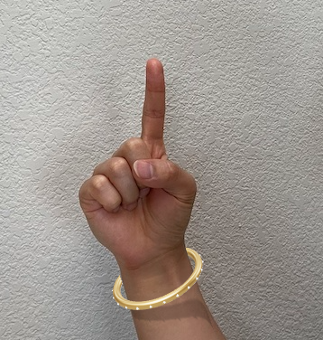
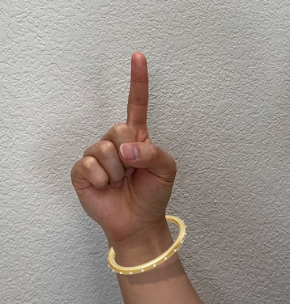
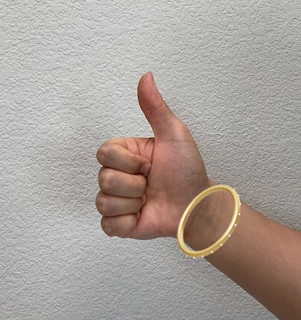
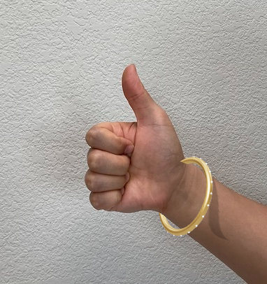
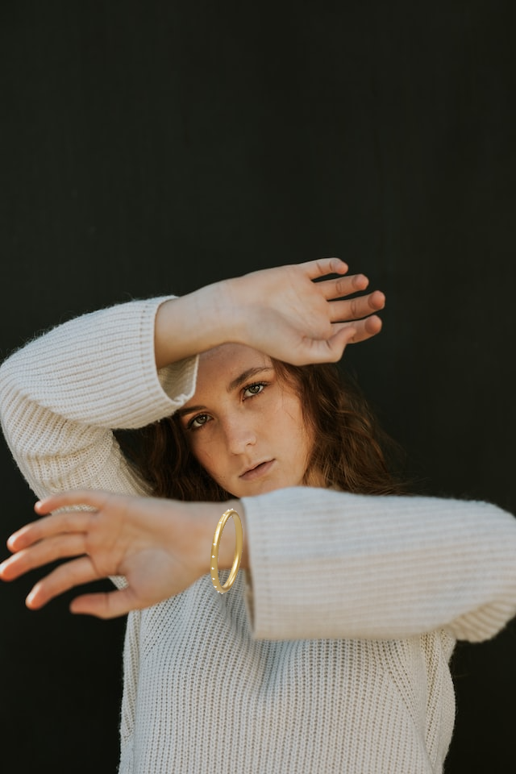

Ảnh mẫu MediaPipe, inference thật. Source tham chiếu là bản đã đọc trước sửa Upload; chưa có bản được người dùng xác nhận là đẹp. Không thay model/PBR hoặc tuyên bố nghiệm thu trên ảnh người dùng.
Trước sửa: lệch tracking 4.89°, tâm 8.0 px, occlusion true. Sau sửa: giữ pose tracking, occlusion true. image.


Trước sửa: lệch tracking 16.39°, tâm 0.0 px, occlusion false. Sau sửa: giữ pose tracking, occlusion true. image.


Trước sửa: lệch tracking 0.00°, tâm 0.0 px, occlusion false. Sau sửa: giữ pose tracking, occlusion true. provisional.
